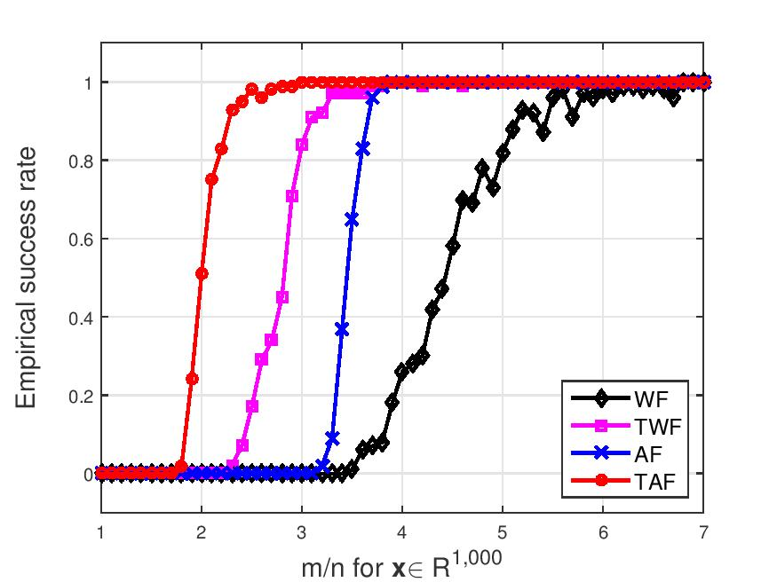
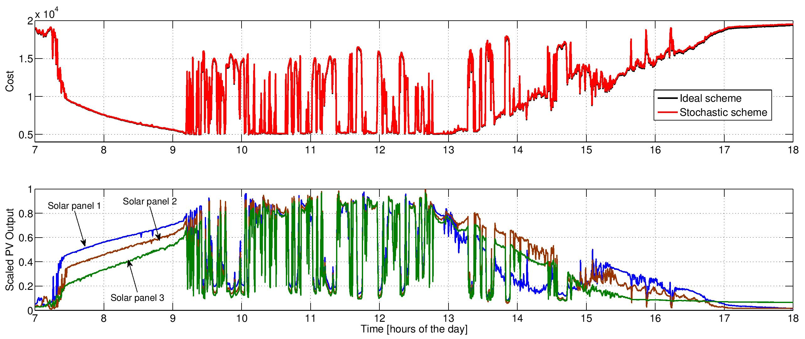

My research interests include
Data Science, optimization, and signal processing: Multi-view data analysis (graph canonical correlation analysis, discriminative data analytics); compressive phase retrieval; tensor decomposition and completion; non-convex and non-smooth optimization
Machine learning algorithms, theory, and applications: Deep learning algorithms, optimality, and generalization; non-asymptotical analysis of biased stochastic approximation and (multi-agent decentralized) reinforcement learning algorithms; data- and model-based control
Monitoring and control of cyber-physical energy networks: Stochastic reactive power control; voltage regulation; topology learning; robust power system state estimation; data- and physics-driven state estimation and forecasting
Data Science, optimization, and signal processing
High-dimensional statistical signal processing with applications to phase retrieval
The problem of solving systems of quadratic equations has a plethora of applications ranging from mixed linear regressions to the well-known phase retrieval. Under Gaussian random sampling/feature vectors, we develop simple, scalable, and efficient iterative optimization algorithms that are able to solve a quadratic system when there are about as many equations as unknowns in linear time. It is known in statistical inference and learning that convex formulations are unbounded and thus sensitive to outliers, yet non-convex ones that are difficult to optimize lead to computationally more scalable and statistically more accurate solution algorithms. We formulate the problem of solving quadratic equations as a non-convex optimization, and develop two-stage iterative optimization algorithms, that consist of obtaining an orthogonality-promoting initialization first and refining the initialization via truncated/stochastic gradient-type iterations. Empirically, our algorithms recover exactly any real-valued signals when the number of equations is about 3 times the number of unknowns, narrowing the gap from the information-theoretic measurement/unknown ratio 2.
|  |
G. Wang, G. B. Giannakis, Y. Saad, and J. Chen, ‘‘Phase Retrieval via Reweighted Amplitude Flow," IEEE Transactions on Signal Processing, vol. 66, no. 11, pp. 2818-2833, June 2018.
G. Wang, G. B. Giannakis, and J. Chen ‘‘Solving Large-scale Systems of Random Quadratic Equations via Stochastic Truncated Amplitude Flow,’’ Proc. of EUSIPCO, Kos Island, Greece, August 28-Sept. 3, 2017. (Best Student Paper).
G. Wang, G. B. Giannakis, and Y. Eldar, ‘‘Solving Random Systems of Quadratic Equations via Truncated Amplitude Flow," IEEE Transactions on Information Theory, vol. 64, no. 2, pp. 773-794, February 2018. (Preprint). (Website and codes).
G. Wang and G. B. Giannakis, ‘‘Solving Random Systems of Quadratic Equations via Truncated Generalized Gradient Flow,’’ in The Thirtieth Annual Conf. on Neural Information Processing Systems, Barcelona, Spain, December 5-10, 2016 (Preprint).
Graph multiview canonical correlation analysis
Multiview canonical correlation analysis (MCCA) seeks latent low-dimensional representations encountered with multiview data of shared entities (a.k.a. common sources). However, existing MCCA approaches do not exploit the geometry of the common sources, which may be available a priori, or can be constructed using certain domain knowledge. This prior information about the common sources can be encoded by a graph, and be invoked as a regularizer to enrich the maximum variance MCCA framework. In this context, this paper’s novel graph-regularized MCCA (GMCCA) approach minimizes the distance between the wanted canonical variables and the common low-dimensional representations, while accounting for graph-induced knowledge of the common sources. Relying on a function capturing the extent to which the low-dimensional representations of the multiple views are similar, a generalization bound of GMCCA is established based on Rademacher’s complexity.Tailored for setups where the number of data pairs is smaller than the data vector dimensions, a graph regularized dual MCCA approach is also developed. To further deal with nonlinearities present in the data, graph-regularized kernelMCCA variants are put forward too. Interestingly, solutions of the graph-regularized linear, dual, and kernel MCCA are all provided in terms of generalized eigenvalue decomposition. Several corroborating numerical tests using real datasets are provided to showcase the merits of the graph-regularized MCCA variants relative to several competing alternatives including MCCA, Laplacian regularized MCCA, and (graph-regularized) PCA.
|
|
(a) Proposed GMCCA |
J. Chen, G. Wang, and G. B. Giannakis, ‘‘Graph Multiview Canonical Correlation Analysis," IEEE Transactions on Signal Processing, vol. 67, no. 11, pp. 2826-2838, June 2019.
J. Chen, G. Wang, Y. Shen, and G. B. Giannakis, ‘‘Canonical Correlation Analysis of Datasets with a Common Source Graph," IEEE Transactions on Signal Processing, vol. 66, no. 16, pp. 4398-4408, August 2018.
J. Chen, G. Wang, and G. B. Giannakis, ‘‘Multiview Canonical Correlation Analysis over Graphs,’’ Proc. of Intl. Conf. on Acoustics, Speech, and Signal Processing, Brighton, UK, May 12-17, 2019.
Nonlinear discriminative data analytics
Principal component analysis (PCA) is widely used for feature extraction and dimensionality reduction, with documented merits in diverse tasks involving high-dimensional data. PCA copes with one dataset at a time, but it is challenged when it comes to analyzing multiple datasets jointly. In certain data science settings however, one is often interested in extracting the most discriminative information from one dataset of particular interest (a.k.a. target data) relative to the other(s) (a.k.a. background data). To this end, this paper puts forth a novel approach, termed discriminative (d) PCA, for such discriminative analytics of multiple datasets. Under certain conditions, dPCA is proved to be least-squares optimal in recovering the latent subspace vector unique to the target data relative to background data. To account for nonlinear data correlations, (linear) dPCA models for one or multiple background datasets are generalized through kernel-based learning. Interestingly, all dPCA variants admit an analytical solution obtainable with a single (generalized) eigenvalue decomposition. Finally, substantial dimensionality reduction tests using synthetic and real datasets are provided to corroborate the merits of the proposed methods.
|
|
G. Wang, J. Chen, and G. B. Giannakis, “DPCA: Dimensionality Reduction for Discriminative Analytics of Multiple Large-Scale Datasets,” Proc. of Intl. Conf. on Acoustics, Speech, and Signal Processing, Calgary, Canada, April 15-20, 2018.
J. Chen, G. Wang, and G. B. Giannakis, ‘‘Nonlinear Discriminative Dimensionality Reduction of Multiple Datasets,’’ Proc. of Asilomar Conf. on Signals, Systems, and Computers, Pacific Grove, CA, November 2-5, 2018.
J. Chen, G. Wang, and G. B. Giannakis, ‘‘Nonlinear Dimensionality Reduction for Discriminative Analytics of Multiple Datasets," IEEE Transactions on Signal Processing, vol. 67, no. 3, pp. 740-753, Feburary 2019.
Machine learning algorithms, theory, and applications
Learning ReLU neural networks: algorithms, optimality, and generalization
Neural networks with rectified linear unit (ReLU) activation functions (a.k.a. ReLU networks) have achieved great empirical success in various domains. Nonetheless, existing results for learning ReLU networks either pose assumptions on the underlying data distribution being, e.g., Gaussian, or require the network size or training size to be sufficiently large. In this context, the problem of learning a two-layer ReLU network is approached in a binary classification setting, where the data are linearly separable and a hinge loss criterion is adopted. Leveraging the power of random noise perturbation, this paper presents a novel stochastic gradient descent (SGD) algorithm, which can provably train any single-hidden-layer ReLU network to attain global optimality, despite the presence of infinitely many bad local minima, maxima, and saddle points in general. This result is the first of its kind, requiring no assumptions on the data distribution, training/network size, or initialization. Convergence of the resultant iterative algorithm to a global minimum is analyzed by establishing both an upper bound and a lower bound on the number of non-zero updates to be performed. Moreover, generalization guarantees are developed for ReLU networks trained with the novel SGD leveraging classic compression bounds. These guarantees highlight a key difference (at least in the worst case) between reliably learning a ReLU network as well as a leaky ReLU network in terms of sample complexity. Numerical tests using both synthetic data and real images validate the effectiveness of the algorithm and the practical merits of the theory.
|
|
Our modified stochastic gradient descent algorithm (with principled noise injection into activity indicator function of the ReLU activation function) provably escapes local minima and saddle points to reach a global minimizer.
G. Wang, G. B. Giannakis, and J. Chen, ‘‘Learning ReLU Networks on Linearly Separable Data: Algorithm, Optimality, and Generalization," IEEE Transactions on Signal Processing, vol. 67, no. 9, pp. 2357-2370, May 2019. (Website and codes).
L. Zhang, G. Wang, and G. B. Giannakis, ‘‘Real-time Power System State Estimation and Forecasting via Deep Neural Networks,” IEEE Transactions on Signal Processing, vol. 67, no. 15, pp. 4069-4077, August 2019. Python code available here
Finite-time analysis of biased stochastic approximation algorithms with applications to (multi-agent decentralized) reinforcement learning
Motivated by the widespread use of temporal-difference (TD-) and Q-learning algorithms in reinforcement learning, this paper studies a class of biased stochastic approximation (SA) procedures under a mild “ergodic-like” assumption on the underlying stochastic noise sequence. Building upon a carefully designed multistep Lyapunov function that looks ahead to several future updates to accommodate the stochastic perturbations (for control of the gradient bias), we prove a general result on the convergence of the iterates, and use it to derive non-asymptotic bounds on the mean-square error in the case of constant stepsizes. This novel looking-ahead viewpoint renders finite-time analysis of biased SA algorithms under a large family of stochastic perturbations possible. For direct comparison with existing contributions, we also demonstrate these bounds by applying them to TD- and Q-learning with linear function approximation, under the practical Markov chain observation model. Extensions to multi-agent decentralized TD algorithms are also investigated. The resultant finite-time error bounds for (decentralized) TD- and Q-learning algorithms are the first of their kind, in the sense that they hold i) for the unmodified versions (i.e., without making any modifications to the parameter updates) using even nonlinear function approximators; as well as for Markov chains ii) under general mixing conditions and iii) starting from any initial distribution, at least one of which has to be violated for existing results to be applicable.
G. Wang, B. Li, and G. B. Giannakis, ‘‘A Multistep Lyapunov Approach for Finite-Time Analysis of Biased Stochastic Approximation,’’ submitted October 2019. (pdf)
J. Sun, G. Wang, G. B. Giannakis, Q. Yang, and Z. Yang, ‘‘Finite-Sample Analysis of Decentralized Temporal-Difference Learning with Linear Function Approximation,’’ submitted November 2019. (pdf)
Q. Yang, G. Wang, A. Sadeghi, G. B. Giannakis, and J. Sun, “Two-Timescale Voltage Control in Distribution Grids Using Deep Reinforcement Learning,” IEEE Transactions on Smart Grid, to appear March 2020.
A. Sadeghi, G. Wang, and G. B. Giannakis, ‘‘Deep Reinforcement Learning for Adaptive Caching in Hierarchical Content Delivery Networks,” IEEE Transactions on Cognitive Communication and Networking, to appear December 2019.
Monitoring and control of cyber-physical power systems
Scalable and robust power system state estimation via composite optimization
In today’s cyber-enabled smart grids, high penetration of uncertain renewables, purposeful manipulation of meter readings, and the need for wide-area situational awareness, call for fast, accurate, and robust power system state estimation. The least-absolute-value (LAV) estimator is known for its robustness relative to the weighted least-squares one. However, due to nonconvexity and nonsmoothness, existing LAV solvers based on linear programming are typically slow and, hence, inadequate for real-time system monitoring. This paper, develops two novel algorithms for efficient LAV estimation, which draw from recent advances in composite optimization. The first is a deterministic linear proximal scheme that handles a sequence of (5 ∼ 10 in general) convex quadratic problems, each efficiently solvable either via off-the-shelf toolboxes or through the alternating direction method of multipliers. Leveraging the sparse connectivity inherent to power networks, the second scheme is stochastic and updates only a few entries of the complex voltage state vector per iteration. In particular, when voltage magnitude and (re)active power flow measurements are used only, this number reduces to one or two regardless of the number of buses in the network. This computational complexity evidently scales well to large-size power systems. Furthermore, by carefully mini-batching the voltage and power flow measurements, accelerated implementation of the stochastic iterations becomes possible. The developed algorithms are numerically evaluated using a variety of benchmark power networks. Simulated tests corroborate that improved robustness can be attained at comparable or markedly reduced computation times for medium- or large-size networks relative to existing alternatives.
|
|
G. Wang, H. Zhu, G. B. Giannakis, and J. Sun, “Robust Power System State Estimation from Rank-One Measurements,” IEEE Transactions on Control of Network Systems, to appear December 2019.
G. Wang, G. B. Giannakis, and J. Chen, “Robust and Scalable Power System State Estimation using Composite Optimization,” IEEE Transactions on Smart Grid, vol. 10, no. 6, pp. 6137-6147, November 2019.
G. Wang, A. S. Zamzam, G. B. Giannakis, and N. D. Sidiropoulos, “Power System State Estimation via Feasible Point Pursuit: Algorithms and Cramer-Rao Bound,” IEEE Transactions on Signal Processing, vol. 66, no. 6, pp. 1649-1658, March 2018.
Stochastic energy management via smart inverters in power distribution grids
Distribution microgrids are currently being challenged by voltage fluctuations due to renewable generation, demand response, and electric vehicles. Advances in photovoltaic (PV) inverters offer new opportunities for reactive power management, provided PV owners have the right investment incentives. Accounting for the increasing time-variability of distributed generation and demand, a stochastic reactive power compensation scheme is developed. The scheme is distribution-free, and it relies solely on real-time power injection data. Numerical tests on an industrial 47-bus microgrid and the residential IEEE 123-bus feeder corroborate its superiority over its deterministic alternative, as well as its capability to track variations in solar generation and household demand.
|  |
V. Kekatos, G. Wang, A.-J. Conejo, and G. B. Giannakis, “Stochastic Reactive Power Management in Microgrids with Renewables,” IEEE Trans. on Power Systems, vol. 30, no. 6, pp. 3386–3395, Aug. 2014. (pdf)
V. Kekatos, G. Wang, and G. B. Giannakis, “Stochastic Loss Minimization for Power Distribution Networks,” in IEEE North American Power Symposium (NAPS), Pullman, WA, Sep. 2014. (pdf)
G. Wang, V. Kekatos, A.-J. Conejo, and G. B. Giannakis, ‘‘Ergodic Energy Management Leveraging Resource Variability in Distribution Grids,’’ IEEE Transactions on Power Systems, to appear June 2016. (pdf)
G. Wang, V. Kekatos, and G. B. Giannakis, ‘‘Stochastic Energy Management in Distribution Grids,’’ in Proc. of Intl. Conf. on Acoustics, Speech and Signal Processing, Shanghai, China, March 20-25, 2016. (pdf)